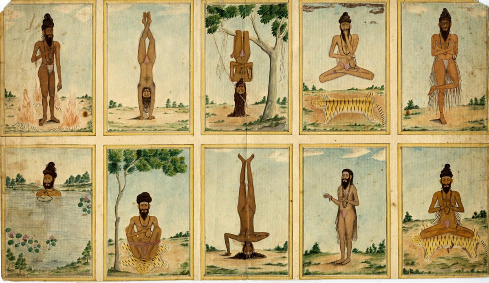

Yoga is a systematic practice of physical exercise, breath control, relaxation, diet control, and positive thinking and meditation aimed at developing harmony in the body, mind, and environment.
The origin is a Sanskrit word Yog meaning union. Yoga is a union of the organ systems in the body with the consciousness in the mind. Philosophically, yoga produces a union of body, mind, and energy (or soul or spirit) to bring about a state of equanimity (calmness). Progressing to an even more advanced state, blending science and philosophy, one experiences a union of body, mind, internal energy, and the all-pervading cosmic energy, resulting in better physical health, mental control, and, ultimately, self-realization.
In the health fields, yoga techniques are being applied in health promotion programs, substance abuse treatment programs, and as a complementary treatment for diseases such as anxiety disorders, depression, coronary heart disease, cancers, and HIV/AIDS.
Yoga dates back to Northern India about 5,000 years ago. The first early writings on Yoga were written on fragile palm leaves. Just as a sacred text, the practice was defined by a group of mystic seers called the Brahmans and Rishis. The idea behind yoga for them was through scriptures of the teaching of ritual sacrifice. Not any physical entity but the sacrifice of the ego(self) through meditation, conduct and wisdom. This was taught as a means of reaching enlightenment, or what is now thought of as Nirvana. A few centuries after, yoga masters redefined the practice and created an actual system of practices as a means for rejuvenating the body and prolonging life. The Tantra Yoga practice was then developed as a way to cleanse the body and mind. This exploration of these physical-spiritual connections and body centered practices led to the creation of what we primarily think of yoga in the West.Yoga masters travelled West beginning in the late 1800s. The first seed that was planted is said to actually be at the Parliament of Religions in Chicago. The first yoga studio was opened in Hollywood in 1947 teaching a form of Yoga called Hatha Yoga. Since then, styles and schools have been created in the West making modern yoga what it is today in the West.

Developed by American yogi in 1997, so is fairly new to the Yoga World. The goal of Anusara is to use the physical aspect of Yoga to help one open their heart and let true inner loving-kindess out. Very spiritual.
Ashtanga is more based on ancient yoga teachings and was brought to the West in 1970s. In this practice, each pose is supposed to be linked a breath. Every practice is performed with the same poses, in the same order. This one is more physically vigorous.
Bikram is a sweatier form of Yoga, closer to a workout, developed by Bikram Choudhury 30 years ago. Like Ashtanga, a Bikram class always follows the same sequence of poses, although Bikram poses are different from Ashtanga.
Hatha refers to any type of yoga that teaches posture. This style is most popular in the West. Here are your most basic introduction to an array of yoga poses, but nevertheless, you still will great afterwards.
Similar to Bikram, you'll need to bring some sort of towel to Hot Yoga as you're going to sweat. The sequences between the two are similar as well but not exactly alike. The room will purposely be heated so that you will sweat profusely.
Iyengar is probably one of the more strict style of yoga. Focus is more on making sure you are aligned properly in your poses. It isn't meant for getting your heart rate up, but it is more mentally and physically challenging than you'd think.
Restorative yoga is meant more for relaxing any anxieties or nerves you may have. Classes can have blankets and blocks to help you into more reserved poses. A good restorative session is adi to be more rejuvenating than deciding to take nap.
Vinyasa focuses more on fluidity, smoothly transitioning from sequence to sequence. Similar to Ashtanga, but here, no two classes are the same and provide different routines every time.